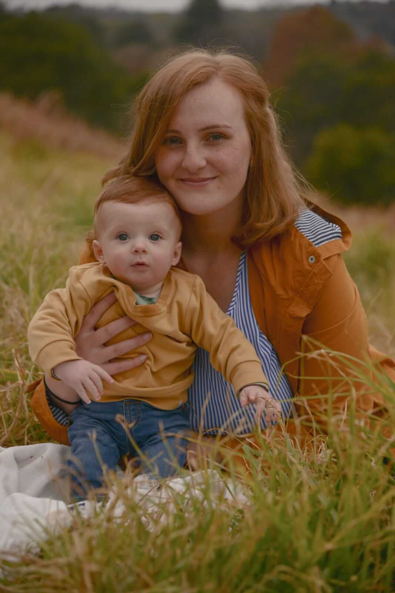

Jarod Ramos
About Me
My name is Jarod Ramos, and I live in Johannesburg, South Africa. I currently work as a System Administrator at a VAS company.Ive always had a passion for sports, with football being my favorite. I regularly play indoor football and enjoy watching matches with my family. Im a lifelong supporter of Arsenal, a team Ive followed since the age of eight.Outside of sports, I love spending time with my family and going on trips together. One of the most meaningful experiences in my life was serving a full-time mission in London, England, where I strengthened my relationship with my Savior.
My Family
I am the third son of four boys. My two older brothers are married, and each has a son. My eldest brother lives in England, while the rest of the family still resides in South Africa.I am married to my wife, Monizelle, and we have a two-year-old son named Eli. My father is from Portugal, his family moved to South Africa, and he was baptized at the age of twenty after meeting the missionaries. My mother was born in South Africa and was raised in the church.